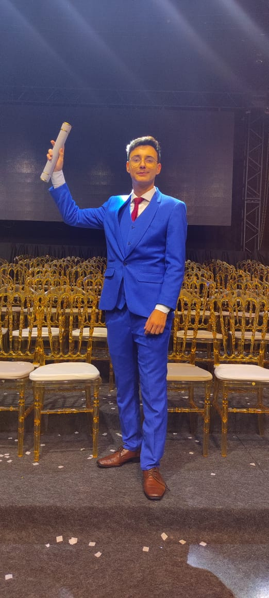

<div class="container-fluid about-me">
    <article class="row">
        
        <aside>
            <h1>Sobre mim</h1>
            <p>Desde muito novo sempre tive muita curiosidade sobre a tecnologia, como aquele informação chegava em minha posse em segundos? Da onde partia?. Eu trabalhava com meus pais no comercio quando pequeno, e havia um empresa de tecnologia bem ao lado. Quando o pessoal de la comprava na loja eu sempre os perguntava sobre o trabalho deles.

                Aos 14 entao comecei meus estudos online na area e entrei em um curso tecnico. Neste curso comecei a aumentar muita minha teia de contatos fiz bons networkings e acabei adquirindo muito conhecimento valioso muito rapido. graças a minha teia de contato consegui meu primeiro estagio.
                
                Neste estagio foi onde eu realmente consegui muita experiencia e visão da area. Auxiliei em diversos projetos e fiz até o meu primeiro projeto 100% sozinho.
                
                Por agora irei continuar aumentando minha rede de contatos e adquirindo mais conhecimento sobre a area.</p>
        </aside>
    </article>
</div>